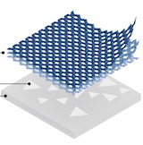
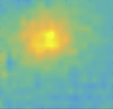

|
I'm wrapping up my PhD in Physics at UC Berkeley where I study light-matter interactions in complex condensed matter systems with Feng Wang. My research focuses on understanding how long-range behavior emerges from the interactions of electrons at molecular length scales. These interactions play a central role in the natural world spanning photosynthesis to bioelectricity and enable discovery of materials with unique optical and electronic properties. To study these systems, I develop and use a wide range of optical spectroscopy, microscopy, and scanning probe techniques that leverage broadband energies, polarization control, and spatiotemporal resolution. |

|
|  |
|
{kind=link}

|
Halleh B. Balch†, Allister F. Mcguire†, Jason Horng†, Hsin-Zon Tsai, Kevin Li, Yi-Shiou Duh, Michael F. Crommie, Bianxiao Cui, Feng Wang. in preparation (2020) The measurement of electrical activity across networks of excitable cells underlies current progress in neuroscience, cardiology, pharmacology, and neurotechnology. From microvolts to millivolts and microns to millimeters, the activity of electrogenic networks spans over three orders of magnitude of intensity, space, and time, which poses substantial technological challenge. As a result, the development of non-invasive, parallel, and scalable methods that permit network-scale recordings with single-cell spatial resolution remains key to enabling studies of electrogenic cells, emergent networks, and bioelectric computation. Here, we demonstrate a new technique capable of label-free imaging of extracellular potentials with high spatial resolution across an electrogenic network. The critically coupled waveguide-amplified graphene electric field (CAGE) sensor leverages the unique electric field-sensitive optical transitions in graphene to convert extracellular potentials into the optical regime, permitting simultaneous single-shot spatially resolved readout of electrogenic firing across a wide field of view. As a proof-of-concept, we demonstrate noninvasive label-free detection of native electrical activity from cardiac action potentials, simultaneously map the propagation of these potentials across a cellular network, and sensitively monitor their modification by pharmacological agents. This platform is robust, scalable to highly parallel detection, and directly compatible with existing microscopy techniques for multi-modal correlative imaging. |
|  |
Jason Horng†, Halleh B. Balch†, Allister F. McGuire, Hsin-Zon Tsai, Patrick R. Forrester, Michael F. Crommie, Bianxiao Cui, Feng Wang Nature Communications (2016) arXiv The use of electric fields for signalling and control in liquids is widespread, spanning bioelectric activity in cells to electrical manipulation of microstructures in lab-on-a-chip devices. However, an appropriate tool to resolve the spatio-temporal distribution of electric fields over a large dynamic range has yet to be developed. Here we present a label-free method to image local electric fields in real time and under ambient conditions. Our technique combines the unique gate-variable optical transitions of graphene with a critically coupled planar waveguide platform that enables highly sensitive detection of local electric fields with a voltage sensitivity of a few microvolts, a spatial resolution of tens of micrometres and a frequency response over tens of kilohertz. Our imaging platform enables parallel detection of electric fields over a large field of view and can be tailored to broad applications spanning lab- on-a-chip device engineering to analysis of bioelectric phenomena. |
{kind=link}
© 2020 Halleh B. Balch